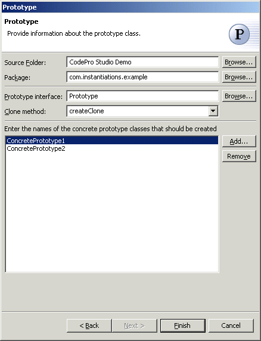

Prototype Pattern
Also known as: Wrapper
The  Prototype Pattern specifies the kinds of objects to create using a
prototypical instance, and create new objects by copying this prototype.
Prototype Pattern specifies the kinds of objects to create using a
prototypical instance, and create new objects by copying this prototype.
Wizard

| Option | Description | Default |
| Source folder | Enter a source folder for the new class. Either type a valid source folder path or click Browse to select a source folder via a dialog. | The source folder of the element that was selected when the wizard was started. |
| Package | Enter a package to contain the new class. Either type a valid package name or click Browse to select a package via a dialog. | The package of the element that was selected when the wizard has been started. |
| Prototype interface | Type or click Browse to select a prototype interface class | <Prototype> |
| Clone method | Type or select the name of the method that will create copies of the prototype objects | <createClone> |
| Concrete prototype classes | Click Add to enter names of concrete prototype classes that should be created. | <blank> |
Applicability
Use the Prototype pattern when a system should be independent of how its products are created, composed, and represented; and
- when the classes to instantiate are specified at run-time, for example, by dynamic loading; or
- to avoid building a class hierarchy of factories that parallels the class hierarchy of products; or
- when instances of a class can have one of only a few different combinations of state. It may be more convenient to install a corresponding number of prototypes and clone them rather than instantiating the class manually, each time with the appropriate state.
Additional Resources
http://c2.com/cgi/wiki?PrototypePattern
http://www.wikipedia.org/wiki/Prototype_pattern